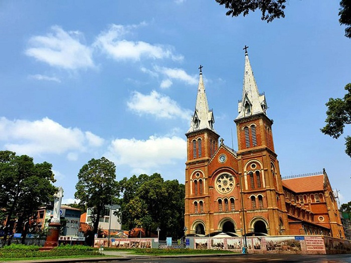
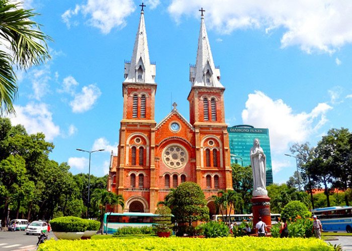
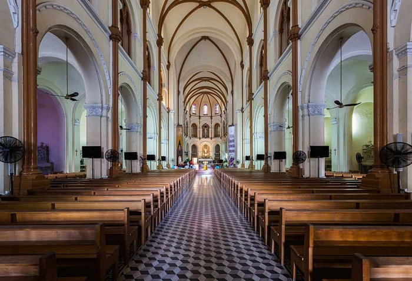
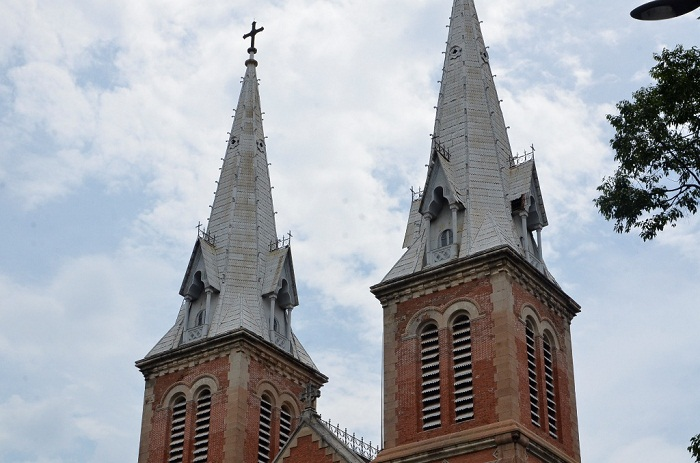
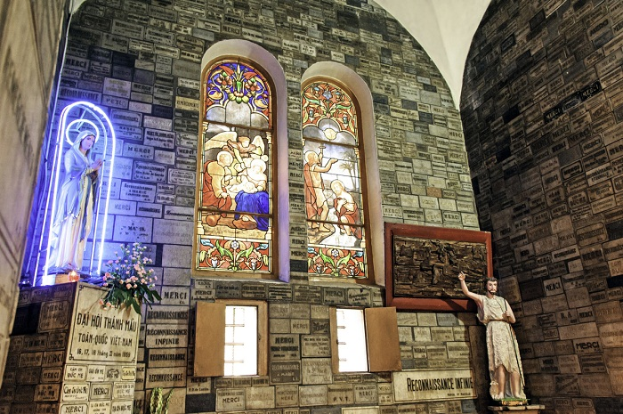
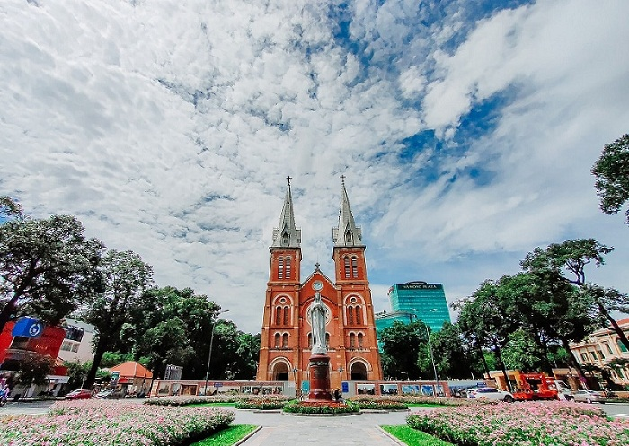

Nhà Thờ Đức Bà - Điểm du lịch phải CHECK IN khi đến Sài Gòn
Nằm ở trung tâm Quận 1 (TP. Hồ Chí Minh), nhà thờ Đức Bà Sài Gòn nổi bật với kiến trúc Pháp cổ, không gian rộng thoáng từ bên ngoài tới bên trong thánh đường. Đây là địa điểm mà du khách không thể bỏ qua khi ghé thăm thành phố Hồ Chí Minh hoa lệ.

Nhà thờ Đức Bà Sài Gòn là điểm đến hấp dẫn du khách thập phương.
Được ví như biểu tượng của thành phố Hồ Chí Minh, nhà thờ Đức Bà là một trong những công trình kiến trúc độc đáo của Sài Gòn. Trải qua nhiều năm đón gió, phơi sương, nơi đây vẫn giữ nguyên nét kiến trúc cổ kính và ấn tượng như thuở ban đầu.
- Giới thiệu nhà thờ Đức Bà. Nhà thờ Đức Bà ở đâu?
- Lịch sử hình thành nhà thờ Đức Bà Sài Gòn
- Đôi nét về kiến trúc nhà thờ Đức Bà
- 3.1. Tòa thánh đường bên trong nhà thờ
- 3.2. Tháp chuông nhà thờ Đức Bà
- 3.3. Khu vực các bàn thờ ở nhà thờ Đức Bà Thành Phố Hồ Chí Minh
- 3.4. Khu vực công viên phía ngoài nhà thờ chính tòa Đức Bà Sài Gòn
- 3.5. Một số điểm nổi bật khác trong kiến trúc của nhà thờ Đức Bà Hồ Chí Minh
- Tượng đồng Pigneau de Béhaine: Được người Pháp đúc vào năm 1903. Nhân vật của bức tượng là giám mục Pigneau de Béhaine (giám mục Bá Đa). Ông dẫn theo một cậu bé - hoàng tử Nguyễn Phúc Cảnh (con trai vua GIa Long). Đây được xem là biểu tượng của sự hòa hợp giữa Công giáo và triều Nguyễn lúc bấy giờ. Tới năm 1945, bức tượng bị phá bỏ, chỉ còn lại bệ đá hoa cương.
- Tượng Đức Mẹ Hòa Bình: Sau một thời gian bỏ trống bệ đá cẩm thạch, đến năm 1958, linh mục Giuse Phạm Văn Thiên đã đặt nhà điêu khắc G.Ciocchetti tạc tượng Đức Mẹ Hòa Bình (bằng đá Carrara của Ý) để đặt tại đây. Tượng Đức Mẹ trong tư thế đứng thẳng, tay cầm trái địa cầu, trên trái địa cầu là cây thánh giá. Mắt Đức Mẹ nhìn lên trời như cầu nguyện hòa bình cho người dân Việt Nam.
Nhà thờ Đức Bà là cách gọi ngắn gọn của Nhà thờ chính tòa Đức Bà Sài Gòn, có tên chính thức là Vương cung thánh đường chính tòa Đức Mẹ Vô nhiễm Nguyên tội. Nhà thờ Đức Bà ở quận mấy? Nhà thờ Đức Bà địa chỉ tại Công trường Công Xã Paris, Phường Bến Nghé, Quận 1, TP. Hồ Chí Minh.
Nhà thờ Đức Bà chính là biểu tượng của thành phố Sài Gòn.
Nhà thờ có tổng chiều dài là 91m, chiều rộng 35,5m, vòm mái chính cao 21m và 2 tháp chuông 2 bên cao gần 57m. Kiến trúc nhà thờ Đức Bà mang đậm lối kiến trúc cổ của Pháp, xây dựng theo đồ án của kiến trúc sư J.Bourard. Với không gian rộng, thoáng từ bên ngoài tới bên trong thánh đường, nơi đây trở thành biểu tượng của Sài Gòn, là điểm du lịch cho du khách trong và ngoài nước khi đặt chân đến thành phố mang tên Bác.
Là một trong những công trình kiến trúc tôn giáo nổi bật giữa trung tâm Sài Gòn nhưng không phải ai
cũng biết rõ về lịch sử nhà thờ Đức Bà. Nhà thờ Đức Bà xây dựng năm nào? Theo giới thiệu về nhà thờ
Đức Bà thì công trình này được khởi công năm 1877, hoàn thành vào năm 1880, do kiến trúc sư J.Bourad
thiết kế, giám sát công trình.
Vào ngày 11/4/1880, lễ cung hiến và khánh thành nhà thờ ở quận 1 được cố đạo Colombert tổ chức với
sự có mặt của Thống đốc Nam Kỳ là Le Myre de Vilers. Vì mọi chi phí xây dựng, trang trí nội thất cho
công trình này đều do Soái phủ Nam Kỳ đảm trách, tổng số tiền thời đó lên tới 2.500.000 franc Pháp
nên thời gian đầu công trình này có tên là Nhà thờ Nhà nước - do Nhà nước Pháp xây dựng và quản lý.
Hình ảnh xưa cũ về nhà thờ Đức Bà Sài Gòn.
Sau, công trình được đổi tên thành nhà thờ Đức Bà, tên chính thức là Vương Cung Thánh đường Chính tòa Đức Mẹ Vô nhiễm Nguyên tội (Immaculate Conception Cathedral Basilica), được phong Vương Cung Thánh Đường vào năm 1962.
Sau hơn 1 thế kỷ xây dựng, nhà thờ Chính tòa Đức Bà Sài Gòn vẫn là điểm đến được nhiều du khách lựa chọn khi đặt chân đến TP.Hồ Chí Minh. Công trình kiến trúc độc đáo này sở hữu nhiều điểm sáng hấp dẫn du khách như:
Bên trong nhà thờ Đức Bà Sài Gòn là tòa thánh đường được thiết kế đặc biệt với khả năng chịu được gấp 10 lần toàn bộ kiến trúc của công trình. Nội thất bên trong nhà thờ được thiết kế gồm 1 lòng chính, 2 lòng phụ, 2 dãy nhà nguyện. Toàn bộ thánh đường có chiều dài là 93m, chiều rộng nhất lên tới 35m và chiều cao mái vòm là 21m. Với diện tích này, nhà thờ Đức Bà bên trong thánh đường có thể chứa tới 1.200 người.
Khám phá thánh đường bên trong nhà thờ.
Khi tham quan nhà thờ, du khách sẽ thực sự bị ấn tượng bởi tháp chuông. Công trình này được ví như linh hồn của nhà thờ. Thuở đầu, công trình chỉ có 2 tháp chuông cao 36,6m, không có mái. Vào năm 1895, thánh đường xây thêm 2 mái chóp để che gác chuông, cao 21m. Như vậy, tổng thiết kế tháp chuông cao 57m. Sau đó, công trình treo thêm 6 chuông gồm 6 âm (đồ, rê, mi, son, la si) được treo trên 2 tháp chuông. Trên mặt mỗi quả chuông đều có họa tiết tinh xảo.
2 tòa tháp chuông cao chót vót có thể nhìn thấy từ xa.
Nếu đã đi nhà thờ Đức Bà Hồ Chí Minh, du khách không nên bỏ qua khu vực các bàn thờ. Các bàn thờ tại đây đều được khắc tinh tế bằng vật liệu đá cẩm thạch nguyên khối. Có 56 ô cửa kính nhiều màu được ghép lại với nhau tạo thành một hình ảnh ấn tượng. Tất cả các đường nét, gờ chỉ và hoa văn khu vực bàn thờ đều mang phong cách Roman và Gothic, vừa tôn nghiêm vừa trang nhã.
Phong cách kiến trúc uy nghi, trang nhã.
Bản đồ nhà thờ Đức Bà thành phố Hồ Chí Minh có một khu vực mà giới trẻ rất nhiệt tình check-in, đó là công viên phía ngoài nhà thờ. trung tâm của khuôn viên mặt trước tòa thánh đường là bức tượng Đức Mẹ Hòa Bình điêu khắc bởi G.Ciocchetti vào năm 1959. Bức tượng cao 4.6m, nặng 8 tấn, làm từ đá cẩm thạch trắng của Italy.
Công viên bên ngoài nhà thờ là địa điểm check-in của nhiều du khách.
Tượng Đức Mẹ Hòa Bình như muốn bao bọc, bảo vệ chúng sinh.